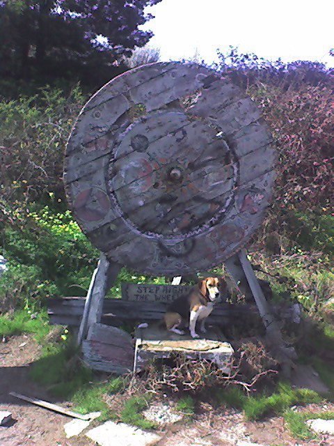

<--Previous Up Next-->

Step Right Up to the Wheel
The weathered remnants of a wheel of fortune, one of a large array of works by the artist Sniff, on the Albany Bulb beach facing El Cerrito. For more on outsider art at the Albany bulb, see http://bumsparadise.com/.